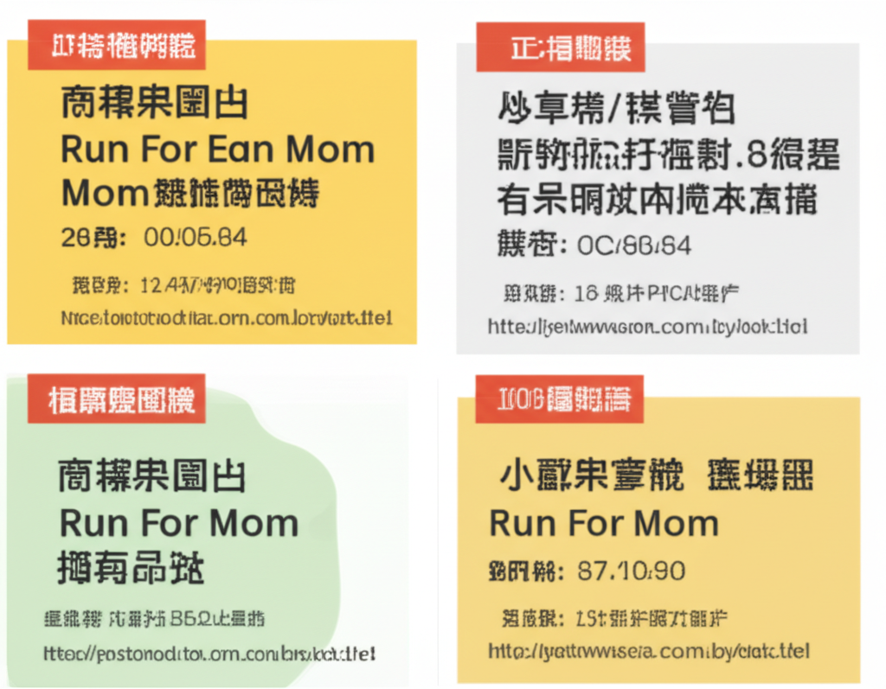

# 近期網路資訊整理：行事曆、投資與教育
## 引言
本次整理了近期網路上的相關資訊，涵蓋了行事曆預覽、投資理財的相關學習資源、以及教育機構的訊息。這些資訊來自不同的來源，包括金融機構、學校網站、新聞媒體以及人力銀行等，提供了多元視角與實用資訊。
## 主體內容
### 第一點：2025、2026 年行事曆與休假攻略
從搜尋結果中可以看到，許多人已經開始關注未來幾年的行事曆。例如，TVBS新聞網已經釋出了2026年的「請假攻略」，預估春節最長可以放16天（需注意最終假日資訊以人事總處公布為主）。永豐金證券豐雲學堂也提供了 5 月 ETF 的配息資訊，並更新至 2025 年 5 月。 此外，針對美股投資者，永豐金證券同樣提供 2025 美股投資行事曆，包含休市時間、開盤時間，以及夏令/冬令時間對應表。這些行事曆資訊，對於提前規劃行程、投資布局都有參考價值。運動筆記也提供了 2025 年的賽事資訊，方便運動愛好者安排。
### 第二點：投資理財學習資源與市場分析
永豐金證券豐雲學堂提供了投資決策的相關學習資源，協助投資人解惑。鉅亨網則提供頭條新聞與市場分析，幫助讀者掌握最新的財經動態。 從 ETF 配息資訊到美股交易規則整理，再到總體經濟的分析，這些資源涵蓋了投資理財的各個層面。
### 第三點：教育機構資訊與校園活動
臺南市大橋國小和國立屏東科技大學圖書與會展館，都發布了最新的網站資訊。 歸仁國中與高雄高工也更新了學校的相關公告與行事曆。這些資訊對於學生、家長以及教職員工，都能提供必要的協助。大橋國小的網站建設採用 XOOPS 校園網站，易於管理。屏東科技大學圖書館則提醒讀者在閉館前整理物品。高雄高工則提報在地優質職缺。
### 第四點：其他資訊
小雞上工提供Email名單整理的打工職缺，徵求整理台灣B2C品牌聯絡資訊的人員。
## 結論
本次整理的網路資訊涵蓋範圍廣泛，從個人生活規劃到投資理財，再到教育機構的訊息發布，都提供了有用的資訊。 透過這些資訊，我們可以更好地安排生活、提升投資能力，並掌握最新的校園動態。 然而，使用者仍需注意資訊的時效性與準確性，並謹慎判斷。